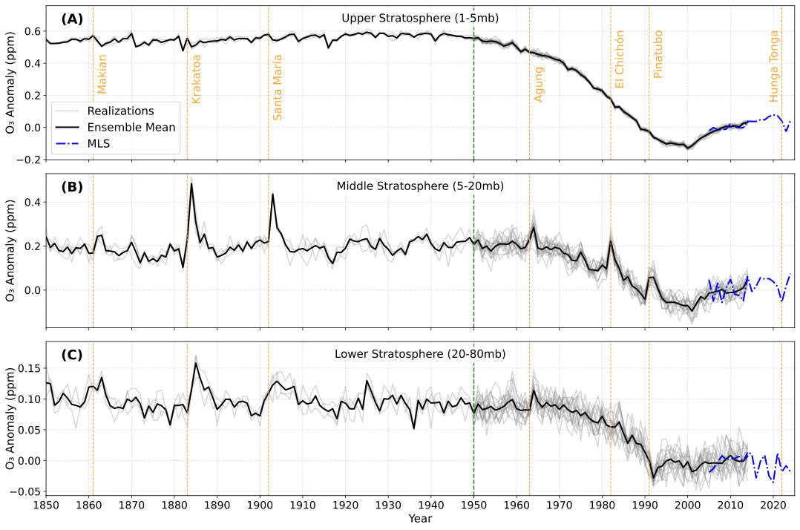

The Antarctic ozone hole was first reported in 1985, and small ozone losses at the global scale were also observed in the late 1980s. But when could the earliest human-caused ozone depletion have been detected — if modern observing capabilities had existed from the start? This project addresses that question through a "thought experiment."
Using a 16-member large initial-condition ensemble of CESM-WACCM6 together with 19 realizations from the Chemistry–Climate Model Initiative (CCMI-2022), I characterise the full distribution of internal variability in stratospheric ozone. I then apply signal-to-noise (S/N) analyses — both local and pattern-based fingerprint methods — to determine when and where the forced anthropogenic depletion signal first emerges above that variability.
The key finding is that ozone depletion in the upper stratosphere was already detectable by approximately 1959 — about 30 years before the discovery of the Antarctic ozone hole and 20 years before the Molina–Rowland theory. This early depletion was driven by CCl₄, a solvent widely used as early as the 1950s. The earliest emergence does not occur where ozone trends are strongest, but where internal variability is lowest, highlighting the importance of understanding natural fluctuations in evaluating human influence.